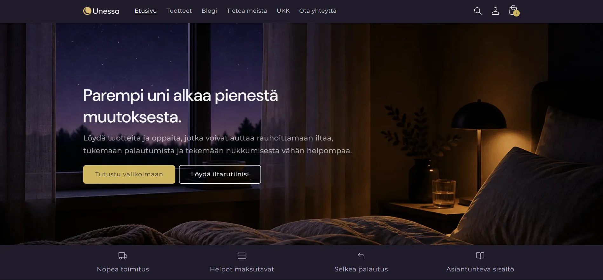
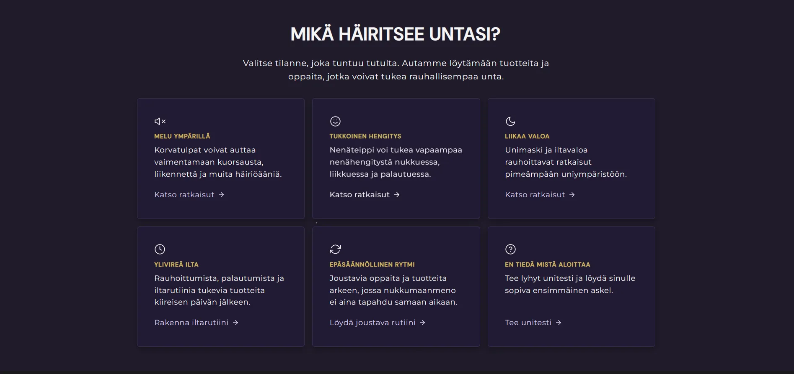
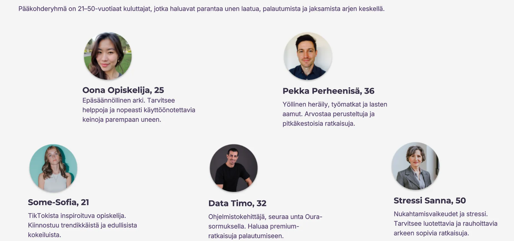
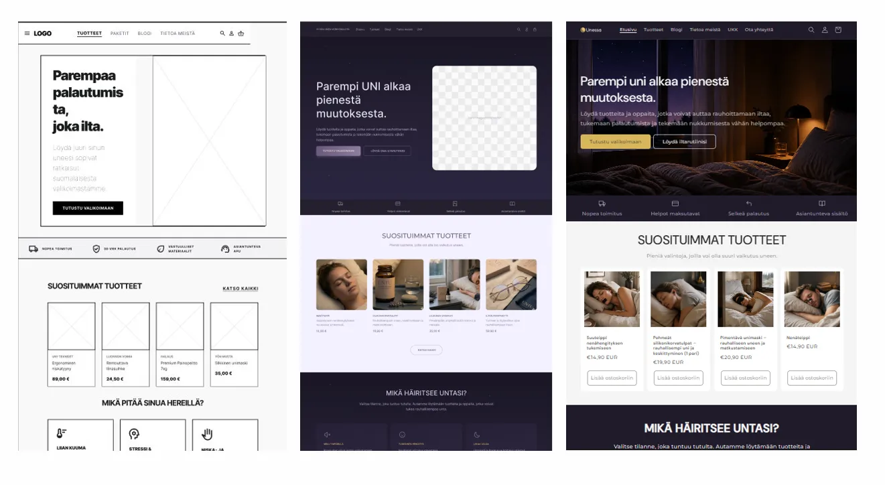

Unessa
A wellness-oriented Shopify e-commerce concept for better sleep. The project turned market analysis, curated product selection, content strategy and commercial store logic into a responsive prototype. Hyvinvointilähtöinen Shopify-verkkokauppakonsepti parempaan uneen. Kurssiprojektissa suunnittelimme Unessalle markkina-analyysiin, kuratoituun tuotevalikoimaan, sisältöstrategiaan ja kaupalliseen verkkokauppalogiikkaan perustuvan prototyypin.
ProblemOngelma
People looking for better sleep products face a fragmented market: pharmacies focus on more medical solutions, while specialist stores often center on snoring or sleep apnea. Hyvän unen tuotteita etsivä kuluttaja kohtaa hajanaisen markkinan: apteekit painottuvat lääkkeellisempiin ratkaisuihin ja erikoiskaupat usein kuorsauksen tai uniapnean ympärille.
GoalTavoite
Design a store that supports sleep routines, recovery and wellbeing without medical overpromising or aggressive sales tactics. Suunnitella verkkokauppa, joka tukee unirutiineja, palautumista ja hyvinvointia ilman lääketieteellisiä ylilupauksia tai aggressiivista myyntiä.
SolutionRatkaisu
A responsive Shopify prototype with a curated product range, product bundle, need-based structure, blog content, payment and logistics planning and an initial sales budget. Responsiivinen Shopify-prototyyppi, kuratoitu tuotevalikoima, tuotepaketti, tarvelähtöinen rakenne, blogisisältö, maksutapa- ja logistiikkasuunnitelma sekä alustava myyntibudjetti.
OutcomeLopputulos
A concrete e-commerce concept that connects user needs, market positioning, content strategy and commercial store logic. Konkreettinen verkkokauppakonsepti, joka yhdistää käyttäjätarpeen, markkinaposition, sisältöstrategian ja kaupallisen verkkokauppalogiikan.
Table of ContentsSisällysluettelo
- OverviewYleiskatsaus
- Three strongest proofsKolme vahvinta näyttöä
- Problem and ContextKonteksti ja ongelma
- My RoleOma roolini
- Research and InsightsTutkimus ja löydökset
- Solution OptionsRatkaisuvaihtoehdot
- The SolutionLopullinen ratkaisu
- Key Design DecisionsKeskeiset design-päätökset
- Validation and LimitationsValidointi ja rajoitteet
- ReflectionReflektio
- CreditsKrediitit
OverviewYleiskatsaus
Unessa is a better sleep e-commerce concept for 21–50-year-old consumers who want to improve sleep quality, recovery and everyday wellbeing. Instead of positioning the store as a medical solution, the concept frames sleep through routines, environment and recovery.
The core question was: how can better sleep be turned into an e-commerce concept that feels trustworthy and useful without medical overpromising or pressure-based sales tactics?
Unessa oli hyvän unen tuotteisiin keskittyvä verkkokauppakonsepti 21–50-vuotiaille kuluttajille, jotka haluavat parantaa unen laatua, palautumista ja arjen jaksamista. Projektissa suunnittelimme verkkokaupan, joka ei asemoidu sairauden hoitoon, vaan parempaa uniympäristöä ja rauhallisempaa iltarutiinia tukevaksi hyvinvointikaupaksi.
Projektin ydinkysymys oli: miten hyvän unen ympärille voidaan rakentaa verkkokauppa, joka tuntuu luotettavalta ja hyödylliseltä ilman lääketieteellisiä ylilupauksia tai painostavaa kampanjamyyntiä?

Three strongest proofsKolme vahvinta näyttöä
1. Product range derived from market and competitor analysis
Keyword analysis, competitor scanning and product popularity signals guided what products were included. The range was built around concrete sleep challenges, not just categories.
2. Commercial logic built into the store structure
Low-priced products required an average order value strategy. Bundles, a free shipping threshold and add-on logic were built into the store structure from the start.
3. Shopify prototype connected brand, content and shopping experience
The prototype included the store structure, key product pages, blog content and a shopping flow, making the concept more than a static mockup.
1. Markkina- ja kilpailija-analyysistä johdettu tuotevalikoima
Hakusana-analyysi, kilpailijavertailu ja tuotteiden suosiosignaalit ohjasivat valikoiman rakennetta. Valikoima rakennettiin konkreettisten unihaasteiden ympärille, ei pelkkien kategorioiden varaan.
2. Liiketoimintalogiikka vietiin osaksi verkkokaupan rakennetta
Edulliset päätuotteet edellyttivät keskiostosta kasvattavaa ajattelua. Tuotepaketit, ilmaisen toimituksen raja ja lisämyynnin logiikka rakennettiin osaksi kaupan rakennetta heti alusta.
3. Shopify-prototyyppi yhdisti brändin, sisällön ja ostokokemuksen
Prototyyppi sisälsi kaupan rakenteen, päätuotesivut, blogisisällöt ja ostopolun, jolloin konsepti oli enemmän kuin pelkkä staattinen mallikuva.
Problem and ContextKonteksti ja ongelma
Sleep has become part of everyday wellbeing alongside nutrition and exercise. Consumers search for solutions related to stress, screen time, light, noise and recovery.
Most options were either pharmacy-driven, supplement-heavy solutions or specialist stores focused on snoring and sleep apnea. This created an opportunity for a store that frames sleep through routines, environment and recovery.
Problem statement: People interested in better sleep need a clear way to find products and content in one place because the existing options are fragmented, pharmacy-driven or medicalized.
Unessa-projektin lähtökohtana oli havainto siitä, että uni on noussut osaksi hyvinvoinnin optimointia samalla tavalla kuin liikunta ja ravinto. Kuluttajat etsivät ratkaisuja esimerkiksi stressiin, ruutuaikaan, valoon, meluun ja palautumisen haasteisiin.
Markkinassa olevat vaihtoehdot näyttäytyivät kuitenkin usein joko apteekkien lääke- ja ravintolisäkeskeisinä ratkaisuina tai kuorsauksen ja uniapnean ympärille rakentuvina erikoiskauppoina. Tämä loi mahdollisuuden verkkokauppakonseptille, joka yhdistäisi fyysiset tuotteet, digitaaliset sisällöt, unirutiinia tukevat paketit ja luottamusta rakentavan sisältömarkkinoinnin.
Problem statement: Hyvinvoinnistaan kiinnostunut kuluttaja tarvitsee tavan löytää parempaa unta tukevia tuotteita ja sisältöä yhdestä selkeästä paikasta, koska olemassa olevat vaihtoehdot ovat usein joko hajanaisia, apteekkikeskeisiä tai sairauslähtöisiä.

My RoleOma roolini
The project was created together with Veera Heikkinen. The concept, analysis, product range and final reporting were developed through shared work, so this case does not present the outcome as individual work.
I was especially responsible for
- structuring the e-commerce concept and business logic with the team
- using competitor and market analysis to inform the product range
- defining the store structure, pages and shopping experience
- building and refining the Shopify prototype according to the project goals
- bringing SEO/GEO thinking into product descriptions and blog content
- evaluating how product bundles, shipping threshold and content support commercial viability
Tein projektin parityönä Veera Heikkisen kanssa. Konsepti, analyysi, valikoima ja lopullinen raportointi syntyivät yhteisen työskentelyn kautta, joten case ei esitä lopputulosta yksin tehtynä työnä.
Vastasin erityisesti
- verkkokaupan konseptin ja liiketoimintalogiikan jäsentäminen yhdessä tiimin kanssa
- kilpailija- ja markkina-analyysin hyödyntäminen tuotevalikoiman suunnittelussa
- verkkokaupan rakenteen, sivujen ja ostokokemuksen määrittely
- Shopify-prototyypin rakentaminen ja viimeistely projektin tavoitteiden mukaisesti
- SEO/GEO-ajattelun vieminen päätuotteiden kuvauksiin ja blogisisältöön
- sen arvioiminen, miten tuotepaketit, toimitusraja ja sisältö tukevat verkkokaupan kaupallista toimivuutta
Research and InsightsTutkimus ja löydökset
Research was fast and decision-oriented. We used keyword analysis, competitor analysis, product popularity signals, Meta Ad Library, segmentation, personas and Figma exploration to inform the concept.
Key findings
1. Customer needs were concrete sleep challenges. This led to a need-based product structure rather than generic categories.
2. Competitors left space for a curated wellness concept. Pharmacy and snoring-focused stores did not offer a holistic, lifestyle-oriented sleep routine experience.
3. Low-priced products required average order value logic. Bundles, free shipping threshold and add-on logic were essential for commercial viability.
4. Trust had to be built through content, not pressure selling. Tone of voice and blog content were part of the value proposition.
Hyödynsimme hakusana-analyysiä, kilpailijavertailua, kilpailijoiden suosituimpien tuotteiden arviointia, Meta Ad Libraryn tarkastelua, asiakassegmentointia, asiakaspersoonia ja Figma-ideointia. Menetelmien tarkoitus oli tehdä päätöksiä valikoimasta, positioinnista ja verkkokaupan rakenteesta.
Keskeiset löydökset
1. Asiakkaiden tarve liittyy konkreettisiin unihaasteisiin. Tämä johti tarvelähtöiseen rakenteeseen pelkkien kategorioiden sijaan.
2. Kilpailijoiden valikoimat jättivät tilaa kuratoidulle hyvinvointikonseptille. Apteekit ja kuorsauspainotteiset kaupat eivät tarjonneet kokonaisvaltaista unirutiinikokemusta.
3. Edulliset tuotteet vaativat keskiostoksen kasvattamista. Tuotepaketti, toimitusraja ja lisämyynnin logiikka olivat kaupallisesti keskeisiä.
4. Luottamus piti rakentaa sisällöllä, ei painostavalla myynnillä. Tone of voice ja blogisisältö olivat osa arvolupausta.

Solution OptionsRatkaisuvaihtoehdot
We compared three positioning directions before deciding on the final concept. Vertailimme kolmea mahdollista positiointia ennen lopullista suuntaa.
Option AVaihtoehto A
Pharmacy-style problem-solving storeApteekkityylinen ongelmanratkaisukauppa
Familiar and trusted shopping context.Luotettava ja tuttu ostokonteksti.
Too medical and hard to differentiate from pharmacies.Liian lääkemäinen ja vaikea erottautua apteekeista.
Not selectedEi valittu
Option BVaihtoehto B
Snoring and breathing-focused specialist storeKuorsaus- ja hengitystuotteisiin erikoistuva kauppa
Clear niche and a concrete problem focus.Selkeä niche ja konkreettinen ongelma.
Too close to existing competitors and medical framing.Liian lähellä kilpailijoita ja sairauskeskeistä markkinaa.
Not selectedEi valittu
Option CVaihtoehto C
Wellbeing and sleep routine storeHyvinvointi- ja unirutiinikauppa
Balanced wellbeing positioning and room for content and bundles.Tasapainoinen hyvinvointipositio ja tila sisällölle sekä paketoinnille.
Requires strong trust-building and content clarity.Vaatii vahvaa luottamuksen rakentamista ja sisällön selkeyttä.
Chosen solutionValittu ratkaisu

The SolutionLopullinen ratkaisu
The final solution was a responsive Shopify prototype for a better sleep store. The store offers products and content for sleep quality, recovery and wellbeing. Its value proposition is to bring better sleep solutions into one clear, trustworthy and aesthetically coherent e-commerce experience.
The main pages were homepage, products, blog, about, FAQ and contact. The product range was structured around customer needs such as breathing, light protection, supplements, sleep environment, evening routines and bundles.
Lopullinen ratkaisu oli responsiivinen Shopify-prototyyppi hyvän unen verkkokaupasta. Kauppa tarjoaa tuotteita ja sisältöä unen laadun, palautumisen ja hyvinvoinnin tueksi. Sen arvolupaus on tarjota parempaan uneen liittyvät ratkaisut yhdessä selkeässä, luotettavassa ja esteettisessä verkkokaupassa.
Verkkokaupan pääsivut olivat etusivu, tuotteet, blogi, tietoa meistä, UKK ja ota yhteyttä. Tuotevalikoima jäsennettiin asiakkaan tarpeiden mukaan kategorioihin, kuten hengitys, valosuojaus, ravintolisät, ympäristö, iltarutiinit ja paketit.
Homepage structure from need to purchase Etusivun rakenne tarpeesta ostoon
The homepage was designed as a guided path rather than a static product catalogue: value proposition, customer need, product range, bundle logic, advisory content and follow-up relationship. Etusivu suunniteltiin ohjatuksi poluksi eikä staattiseksi tuotekatalogiksi: arvolupaus, asiakkaan tarve, tuotevalikoima, tuotepaketti, neuvova sisältö ja jatkosuhde rakentuvat vaiheittain.
Product range and shopping flow Tuotevalikoima ja ostopolku
Beyond the homepage, the prototype included a product listing and cart view to make the shopping flow concrete across devices. Etusivun lisäksi prototyyppiin rakennettiin tuotelistaus ja ostoskori, jotta ostopolku konkretisoituu eri laitteilla.
From Figma exploration to Shopify prototype Figmasta Shopify-prototyypiksi
Key Design DecisionsKeskeiset design-päätökset
Wellness-oriented positioningHyvinvointilähtöinen positiointi
Medical problem-solving store or wellness-oriented routine store.Sairauskeskeinen ongelmanratkaisukauppa tai hyvinvointilähtöinen unirutiinikauppa.
Wellness positioning fit the market gap and supported routines, recovery and content-driven trust.Hyvinvointipositio tarjosi selkeän erottautumisen ja tuki rutiineja, palautumista sekä sisältöön perustuvaa luottamusta.
Curated product rangeKuratoitu valikoima
Large catalog or curated range.Laaja katalogi tai kuratoitu valikoima.
A curated range reduces choice overload and makes the concept clearer.Kuratoitu valikoima vähentää valintakuormaa ja tekee konseptista selkeämmän.
Need-based structureTarvelähtöinen rakenne
Category-first navigation or problem-based entry.Kategoriapohjainen navigaatio tai ongelmalähtöinen sisäänkäynti.
Users could start from their own sleep challenge rather than a generic product taxonomy.Käyttäjä pystyi aloittamaan omasta unihaasteesta eikä pelkästä tuotekategoriasta.
Product bundle for average order valueTuotepaketti keskiostoksen kasvattamiseen
Single items only or bundles included.Yksittäistuotteet tai tuotepaketit mukana.
Bundles create a clear starter solution and help increase average order value.Tuotepaketit tarjoavat selkeän aloitusratkaisun ja kasvattavat keskiostosta.
Responsive Shopify prototype across devicesResponsiivinen Shopify-prototyyppi eri laitteille
Desktop-first store view or responsive store experience across desktop, tablet and mobile.Desktop-painotteinen verkkokauppanäkymä tai eri laitteille mukautuva verkkokauppakokemus.
The Shopify prototype was designed responsively so core content, product listing and the purchase flow work across devices. In consumer e-commerce this is critical because inspiration, comparison and purchase can happen in different contexts and on different screen sizes.Shopify-prototyyppi suunniteltiin responsiiviseksi, jotta verkkokaupan ydinsisällöt, tuotelistaus ja ostopolku toimivat eri laitteilla. Kuluttajaverkkokaupassa tämä on kriittistä, koska inspiraatio, vertailu ja ostaminen voivat tapahtua eri tilanteissa ja eri näytöillä.
Validation and LimitationsValidointi ja rajoitteet
The project did not have post-launch analytics, real customer data or long-term sales tracking. Therefore, the impact cannot be presented as a measured business result.
Limitations and blind spots
- Real willingness to pay was not validated with live traffic.
- Product quality and supply chain require separate validation.
- SEO/GEO visibility needs long-term content work.
- The Shopify prototype shows the concept, but does not prove market demand.
Next sensible test
The smallest useful next test would be to drive a small amount of paid traffic to two or three main product pages and the product bundle. I would measure click-through rate, add-to-cart actions, bundle interest, newsletter signups and which message angles bring the highest-quality traffic.
Projektissa ei ollut käytettävissä julkaisun jälkeistä analytiikkaa, todellista asiakasdataa tai pitkäaikaista myyntiseurantaa. Vaikutusta ei siksi voi esittää mitattuna liiketoimintatuloksena.
Rajoitteet ja sokeat pisteet
- Todellista maksuhalukkuutta ei validoitu liikenteellä.
- Tuotteiden laatu ja toimitusketju vaativat erillisen validoinnin.
- SEO/GEO-näkyvyys edellyttää pitkäjänteistä sisältötyötä.
- Shopify-prototyyppi osoittaa konseptin, mutta ei todista markkinakysyntää.
Seuraava järkevä testi
Pienin järkevä seuraava testi olisi ohjata pientä maksettua liikennettä kahdelle tai kolmelle päätuotesivulle ja tuotepakettiin. Mittaisin klikkausprosenttia, ostoskoriin lisäyksiä, tuotepaketin kiinnostavuutta, uutiskirjeeseen liittymistä ja sitä, mitkä viestikulmat tuottavat eniten laadukasta liikennettä.
ReflectionReflektio
What worked?
The strongest part of the project was that the store was not treated as a visual Shopify exercise. The concept connected market signals, positioning, product selection, content strategy and commercial logic.
What remained uncertain?
Validation remained limited. Without real customer traffic, we cannot confirm demand, pricing acceptance or whether the bundle increases order value.
What I learned?
- Commerce concepts are shaped by product range, pricing, shipping and content as much as the UI.
- Competitor analysis matters most when it leads to concrete scope decisions.
- Trust is part of the product in wellbeing contexts.
- A Shopify prototype is a fast way to test business logic visually and structurally.
What I would do differently?
I would validate the positioning earlier with a light landing page or questionnaire to see which framing resonates.
What is next?
A sensible next step would be a small live traffic test focusing on product pages, the bundle and newsletter signup to validate interest before any full build.
Mikä onnistui?
Projektissa vahvinta oli se, että verkkokauppaa ei rakennettu pelkkänä visuaalisena Shopify-harjoituksena. Konsepti yhdisti markkinasignaalit, kilpailijaposition, tuotevalikoiman, sisältöstrategian ja kaupallisen rakenteen.
Mikä jäi epävarmaksi?
Validointi jäi rajalliseksi. Ilman todellista asiakasliikennettä emme voi varmistaa kysyntää, hinnoittelun toimivuutta tai tuotepaketin vaikutusta keskiostokseen.
Mitä opin?
- Verkkokauppakonseptia muovaavat valikoima, hinnoittelu, toimitusraja ja sisältö yhtä paljon kuin käyttöliittymä.
- Kilpailija-analyysi on hyödyllisintä silloin, kun se johtaa konkreettisiin rajauksiin.
- Hyvinvointikontekstissa luottamus on osa tuotetta.
- Shopify-prototyyppi on nopea tapa testata liiketoimintalogiikkaa visuaalisesti ja rakenteellisesti.
Mitä tekisin toisin?
Validioisin positiointia aikaisemmin kevyellä landing page -testillä tai kyselyllä.
Mitä seuraavaksi?
Luonteva seuraava askel olisi pieni liikennetesti, jossa mitataan päätuotesivujen, tuotepaketin ja uutiskirjeen kiinnostusta ennen täyttä toteutusta.
CreditsKrediitit
This project was created together with Veera Heikkinen as part of Haaga-Helia's E-commerce as a business model course.
- Jan Nässi: concepting, market and competitor analysis, store structure, Shopify prototyping, content and business logic with the team
- Veera Heikkinen: concepting, analysis, target group definition and store content with the team
Tämä projekti syntyi yhteistyössä Veera Heikkisen kanssa osana Haaga-Helian Verkkokauppa liiketoimintamallina -kurssia.
- Jan Nässi: konseptointi, markkina- ja kilpailija-analyysi, verkkokaupan rakenteen suunnittelu, Shopify-prototypointi, sisältö- ja liiketoimintalogiikan kehittäminen yhdessä tiimin kanssa
- Veera Heikkinen: konseptointi, analyysi, kohderyhmien ja verkkokaupan sisällön kehittäminen yhdessä tiimin kanssa
Artifacts and Links Artefaktit ja linkit
Note: the Shopify store may not remain publicly available after the paid Shopify period ends. Screenshots are preserved in this case study. Huomio: Shopify-kauppa ei välttämättä pysy julkisesti saatavilla maksullisen Shopify-jakson päätyttyä. Kuvakaappaukset on siksi säilytetty tässä case studyssa.